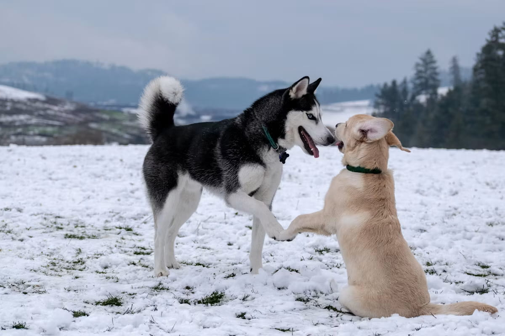

How to Introduce a New Dog to Your Resident Dog

Those first few minutes matter more than you'd think. Get them wrong, and you can spend weeks undoing a bad first impression between two dogs who are about to share a home for years. Slow down here — it costs you patience upfront, and saves you a lot more than that later.
Before the meeting
Make sure your resident dog has had exercise and a bathroom break beforehand — a tired, settled dog handles new situations better than one who's pent up. If possible, do a "scent swap" first: let each dog sniff a blanket or towel the other has slept on, so the first real meeting isn't the first exposure to each other's scent.
Step 1: Meet on neutral territory
Avoid introducing dogs inside your home or yard on the first meeting — a resident dog is far more likely to display territorial behavior in a space they already consider theirs. A neutral spot (a quiet park, a friend's yard neither dog has been to) removes that variable entirely.
Step 2: Parallel walking before face-to-face
Have two handlers walk both dogs side by side, at a distance, moving in the same direction rather than head-on. This lets dogs get used to each other's presence without the pressure of direct interaction. Gradually close the distance over several minutes if both dogs stay relaxed — loose bodies, relaxed tails, no fixed staring.
Step 3: A brief, supervised greeting
Let them approach and sniff for a few seconds, then call them apart before it gets too intense — a short, positive interaction beats a long one that overstays its welcome. Watch specifically for a play bow (front end down, rear up), loose wiggly body language, and reciprocal sniffing, versus stiff bodies, raised hackles, or fixed staring.
Bringing them home
Remove high-value resources (food bowls, favorite toys, valued chews) during the first several days — resource guarding between unfamiliar dogs is one of the most common triggers for conflict, and it's easy to prevent by simply not creating the opportunity yet. Feed dogs separately, and don't leave them unsupervised together until you've seen consistently relaxed, comfortable interactions over time.
Giving the resident dog space
It's easy to focus entirely on making the new dog comfortable and forget that your resident dog is also adjusting to a major change. Maintain their normal routine as much as possible, and make sure they still get one-on-one time and attention — a resident dog who feels displaced is more likely to show tension toward the newcomer.
When it's not going smoothly
Some friction during the first few weeks is normal and often resolves as both dogs settle into a routine. Persistent tension, repeated serious conflict, or any bite that breaks skin is a different situation and warrants professional guidance from a certified trainer or veterinary behaviorist rather than continuing to manage it alone.